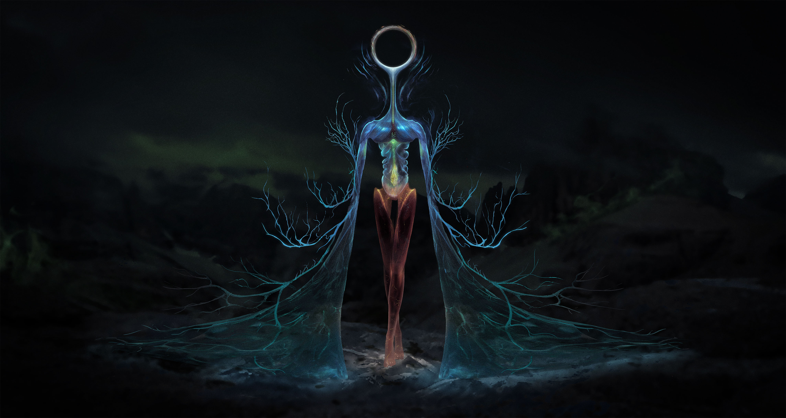
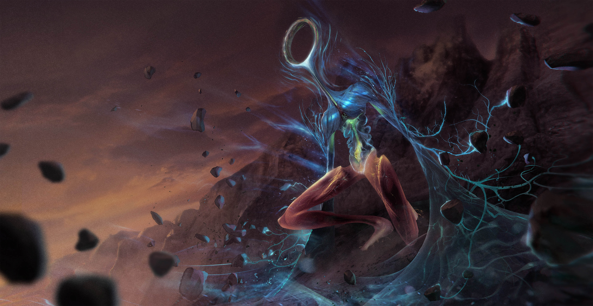
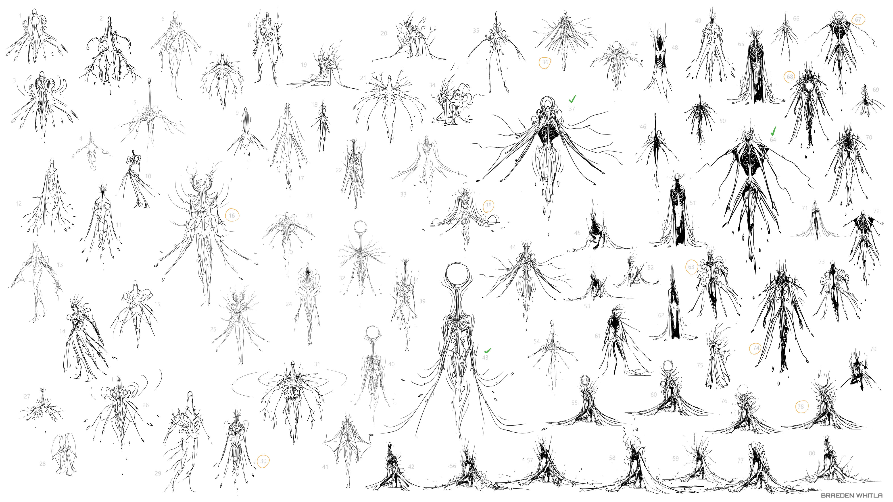
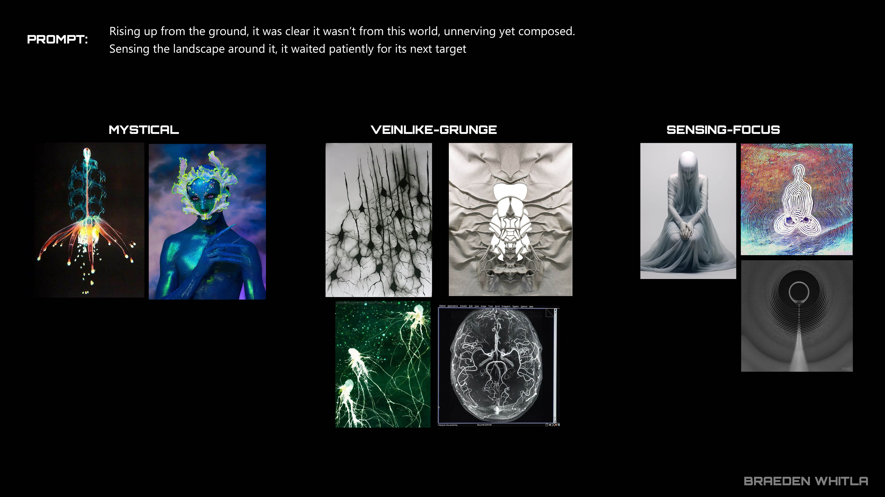

Back in 2007 I started fooling around with mockups for an 8*8 pixel Metroid game. I liked the idea because I had been playing around with smaller tiles back in the Amiga days, enjoying the extra screen space it yielded. Monitors are really large now though, so I might use my 16*16 graphics from my Famicube mockup instead as I like the look of it more. Also, other people have since made 8px engines, the novelty is long gone.
Pixel art from 2006 or 2007 which I fiddled with triannually. 31 colors so far.
Samus is using a GFP strike ship in this mockup. The design is meant to remind the player about the two flanking pillars where she starts in the original game. The background elements here are nonsense, but I have decided to use a mostly black background, with non-tiley background elements rather than the faded tiles that some games use. When the only difference between foreground and background tiles is shade, it can get planarly confusing.
  